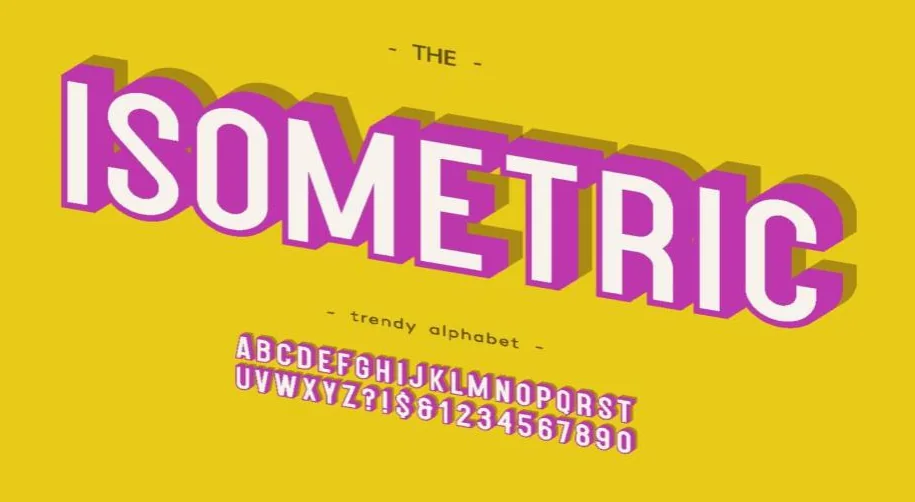
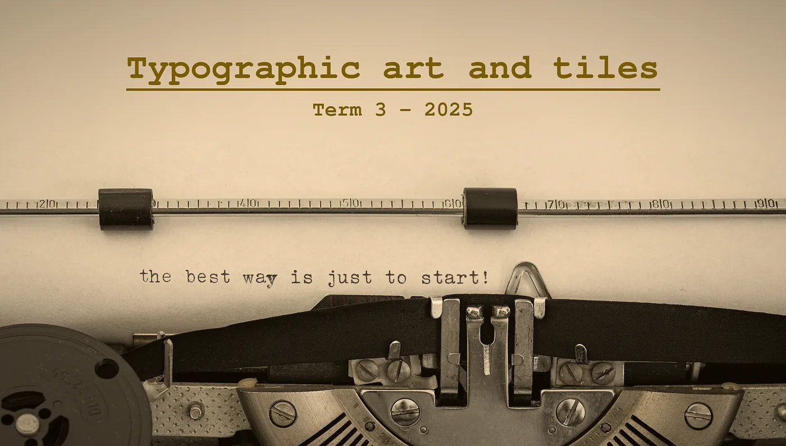
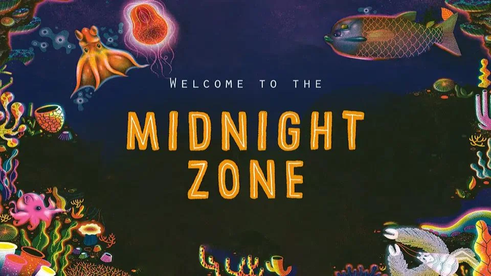
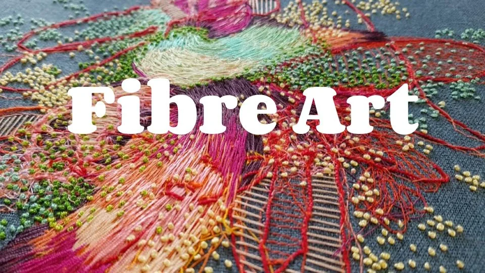
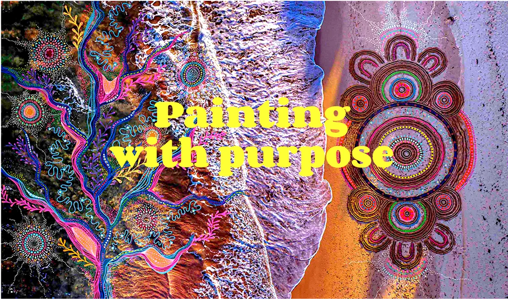

Art Across the Curriculum
Rich learning in the art room
As both a qualified visual arts educator and classroom teacher, I draw on my broad teaching experience to create rich, meaningful, and connected learning opportunities in the art room. I see art as a powerful bridge between curriculum areas that provides a space where students can explore and express ideas from mathematics, literacy, history, Indigenous studies, science, and sustainability through creativity and critical thinking.
Each unit of work is anchored by a focus artist/s, whose practice and story inspire and inform the medium, techniques, and concepts we explore. The artists I select represent a diverse range of genders, ages, cultures, and nationalities, ensuring students are given a platform to experience a wide spectrum of voices reflected in the art world.
I am particularly passionate about highlighting women in the arts, offering balance to the broader curriculum where we often learn primarily about the achievements of men whether in science, mathematics, or history.
By connecting art to students’ existing knowledge and classroom learning, I foster deeper understanding, engagement, and cohesion across subjects. My goal is to make the art room a dynamic hub of inquiry, imagination, and cross-curricular discovery, where every student can see themselves and their potential reflected through creative expression.
Below, you’ll find a sample of unit excerpts which demonstrate some of the ways in which diverse curriculum areas have been encapsulated within my arts program.
Click on each central image to download a PowerPoint sample
Isometrics Drawing and 3D Design

Download PowerPoint sampleThis unit introduced students to the art of isometric drawing, linking visual arts with mathematics and STEM learning.
Students explored how to represent three-dimensional forms on a two-dimensional surface, building confidence in spatial awareness and perspective.
Inspired by Tetris, they designed and created their own 3D block artworks, combining geometry, creativity, and problem-solving.
This unit supported students who were developing skills for 3D modelling in STEM projects, demonstrating how art can strengthen understanding and engagement across the curriculum.
Typography and the Art of the Written Language

Download PowerPoint sampleIn this unit, students explored the art and history of typography, linking visual arts with literacy and communication.
We investigated the evolution of written language — from early hand lettering and the first printed texts to the printing press, typewriters, and modern digital design.
Students examined how the development of writing and printing transformed the way people share stories, ideas, and information across time.
Drawing on this understanding, they designed and created their own unique fonts and typefaces, discovering how visual style can shape meaning and expression in written communication.
Our Ocean Impact – Science and discovery

Download PowerPoint sampleThis unit invited students to dive into the mysterious world of the Midnight Zone, where art and science meet beneath the ocean’s surface.
We explored the work of scientific artists, who, before the invention of cameras, helped the world see and understand new species through careful observation, drawing, and painting.
Students learned about early explorers who first documented deep-sea life, as well as contemporary artists whose work highlights the beauty and fragility of marine ecosystems.
Linking to biological science and sustainability, students created their own imaginative deep-sea artworks while reflecting on humanity’s impact on the ocean and our responsibility to protect it.
Fibre art and weaving traditions

Download PowerPoint sampleIn this unit, students explored the world of fibre art, discovering how natural and synthetic fibres are made and how they have been used across cultures for thousands of years.
From clothing and baskets to art and shelter, we examined the many ways people have used fibres for both function and expression.
Students compared the effort and craftsmanship behind handmade textiles with the mass production of clothing today, gaining an appreciation for traditional skills and sustainability.
Throughout the unit, we learned a range of weaving techniques, culminating in a whole-school yarn bombing project that transformed the front of our school into a colourful celebration of creativity, collaboration, and community.
A history of polka dots

Download PowerPoint sampleThis unit explored the many ways artists use dots to tell stories, create patterns and communicate ideas. Students investigated the rich tradition of dot painting in Indigenous Australian art through the vibrant work of Bobbi Lockyer and discovered how dots can represent culture, connection and identity.
We also explored the playful and immersive artworks of Yayoi Kusama, learning how repetition, colour and pattern can transform ordinary objects and spaces. Older students made connections to the Pop Art movement and revisited the work of Roy Lichtenstein from previous art units.